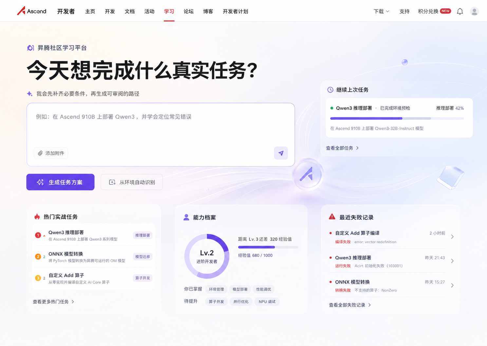
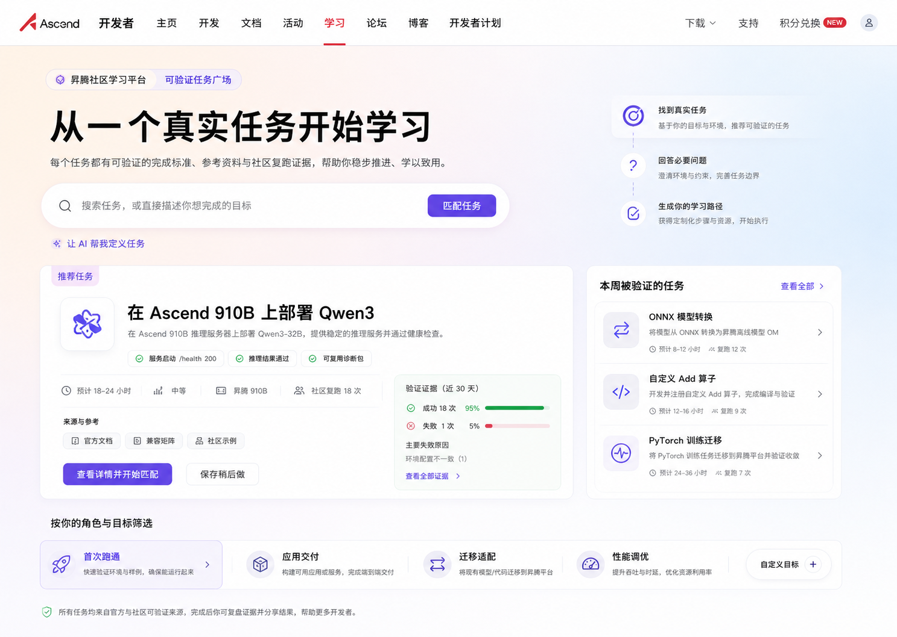
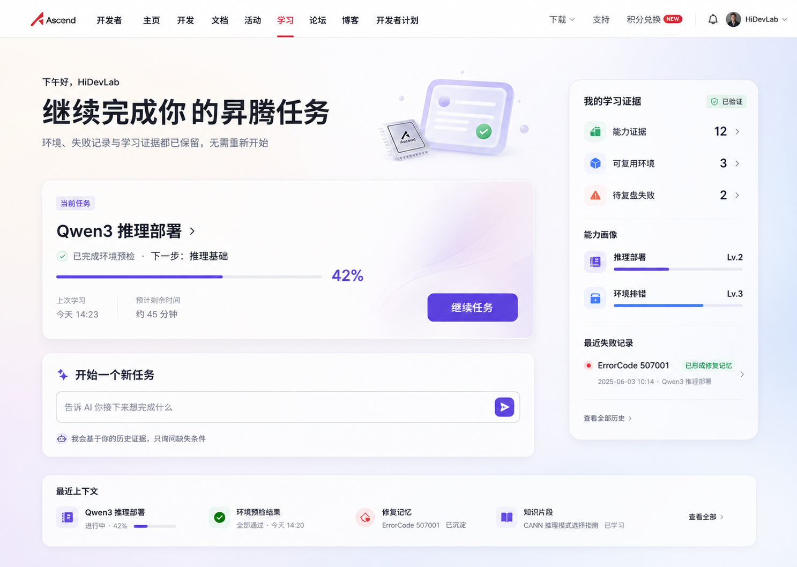

LANDING PAGE · BEFORE PATH GENERATION
同一入口问题，三种不同回答
三张首页都停留在“学习路径生成之前”，点击任意方向可全屏查看。
内容基线一致：真实任务、个人上下文、AI 补问。比较重点是首页第一动作、信息密度和对新老用户的偏向。

方案 1Task-first
开放任务意图画布
先让用户描述真实目标，再由 AI 补齐缺失条件；其他信息围绕意图动态出现。
最强项AI 感与布局灵活性主要风险新用户可能不知道怎么写

方案 2Discovery-first
可验证任务广场
先用真实任务与复跑证据建立选择信心，再进入 AI 个性化和路径生成。
最强项降低首次选择成本主要风险容易被理解成任务商城

方案 3Context-first
自适应学习驾驶舱
回访用户先继续当前任务，同时保留开始新任务的入口，突出证据与上下文连续性。
最强项长期留存与继续学习主要风险首次访问冲击力较弱
方案 1 · TASK-FIRST
开放任务意图画布
首页第一动作描述真实任务
适合用户目标较明确的新用户
生成前系统动作补齐必要条件
方案 2 · DISCOVERY-FIRST
可验证任务广场
首页第一动作选择或搜索任务
适合用户目标仍模糊的新用户
生成前系统动作匹配任务与证据
方案 3 · CONTEXT-FIRST
自适应学习驾驶舱
首页第一动作继续已有任务
适合用户有历史上下文的回访者
生成前系统动作复用证据与记忆